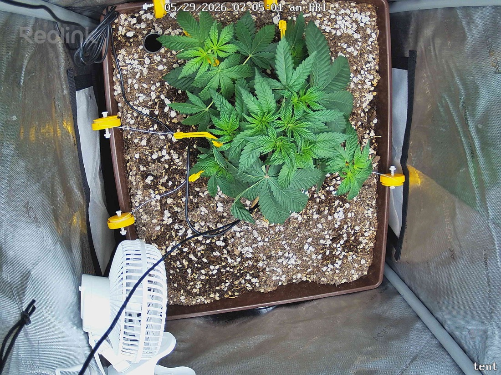

← All reports
May 29, 2026
Fri May 29, 2026 — 7:05 AM

Prognosis
Daily check-in — 2026-05-29
- LST is in and working. Multiple yellow clips with tie-down wires visible pulling lateral branches outward and down — canopy has been opened up from the tight cluster you had on 5/28. Good execution on the training.
- Structural change: plant footprint roughly doubled in top-down area overnight. Lower/side nodes that were tucked under the canopy yesterday are now exposed to direct light — exactly the point of LST.
- Color & posture: leaves remain flat, deep uniform green, no taco, no clawing, no praying-too-hard. Pulled-down branches show no kinking or stress whitening at the bends. Tips clean.
- No stress flags: no bleaching, no edge burn, no interveinal yellowing, no spots, no pests/webbing visible. Soil surface looks appropriately dry on top (last water 5/28 PM, so that tracks).
- Phase check: day ~31 from germ, ~8 days post-top, day-1 post-LST. Veg structure is on schedule — you're now in the "fill the tent floor" phase that LST is designed to accelerate.
On your timing questions (Aug 1 harvest, 2×2 tent):
- Flip to 12/12: photoperiods typically stretch 1.5–2× in the first 2–3 weeks of flower, then need ~8–9 weeks to finish + ~7–10 days dry/cure. Working backward from Aug 1: chop ~Jul 22, so flower start ~May 22–29 for a 9-week strain. You're already past the ideal flip date for an Aug 1 wet-harvest. Realistic call: flip within the next 3–5 days (by ~Jun 2) and accept harvest slides to mid-August, or flip today and target early August with a slightly smaller yield. With a 2×2 and a freshly-LST'd plant that will still stretch, flipping sooner also protects you from outgrowing the tent.
- Light intensity bump: canopy looks unstressed at 400 PPFD with new sites now exposed. Give the LST'd sites 48–72h to acclimate (watch tomorrow's snap for any tacoing on the newly-exposed lower leaves), then step to 500–550 PPFD. At flip, ramp toward 600–700 over the first 2 weeks of flower, then 800–900 mid-flower if no stress.
Next actions: hold water until soil is dry ~1" down (likely 5/31–6/1). Bump light to ~500 PPFD in 2–3 days if no stress appears. Decide this week on flip date — I'd lean flip on or before Jun 2.
Overall: healthy, well-trained, on-track plant — your main decision now is calendar, not horticulture.